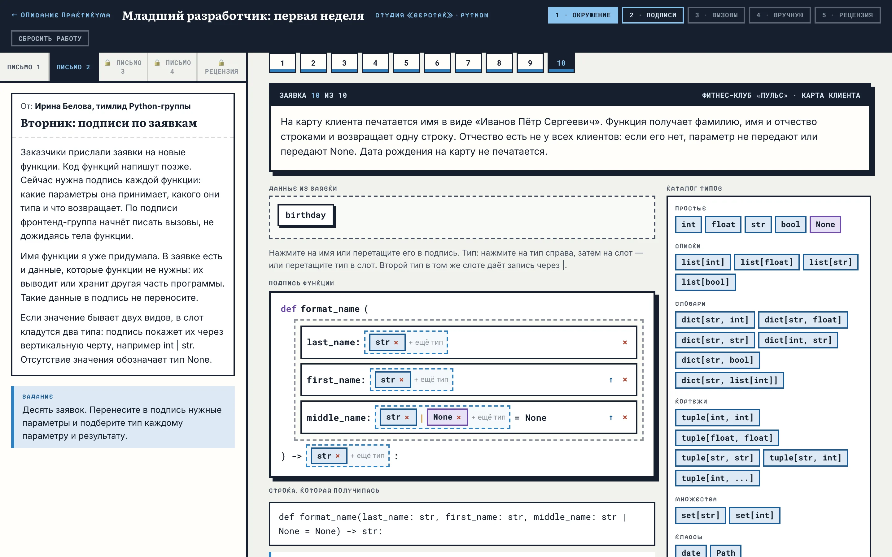
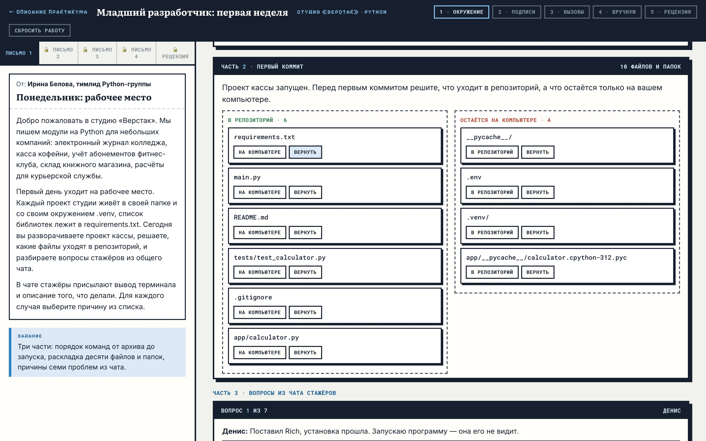
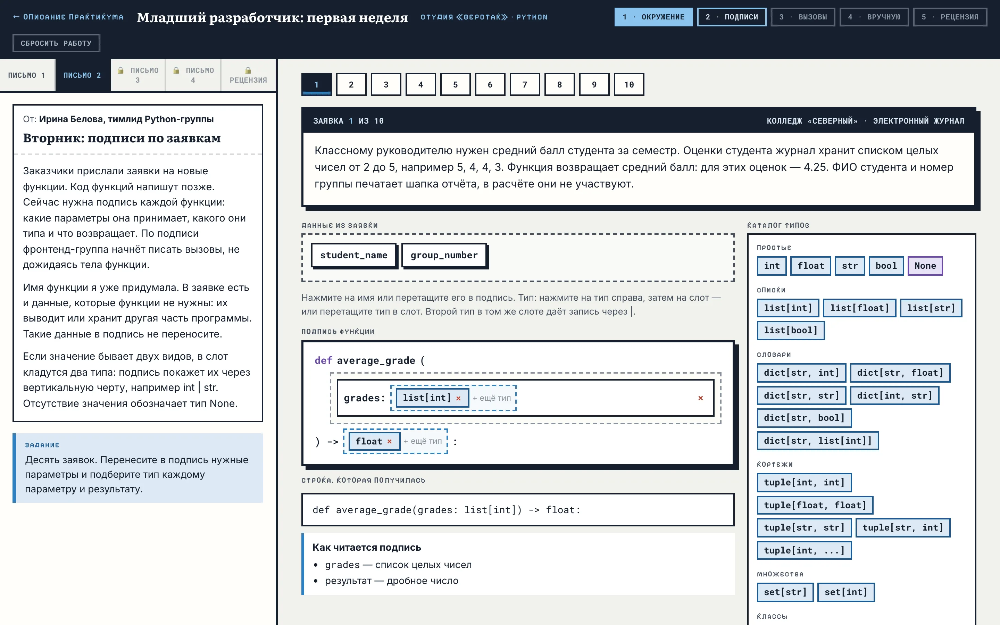
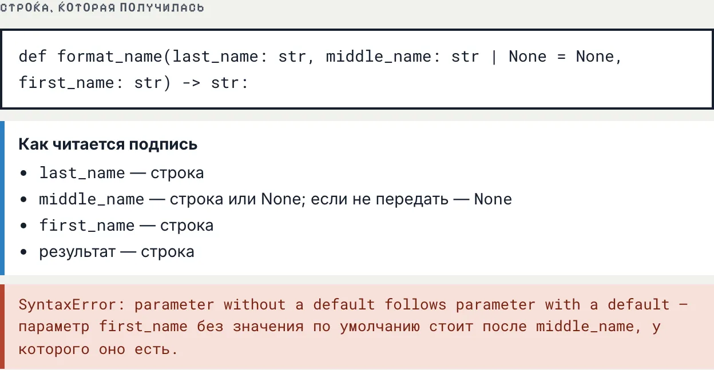
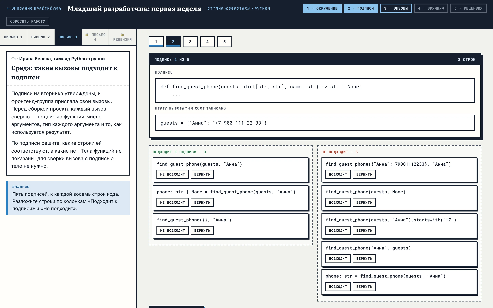
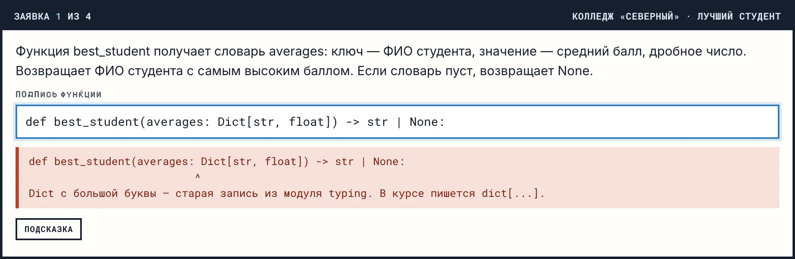
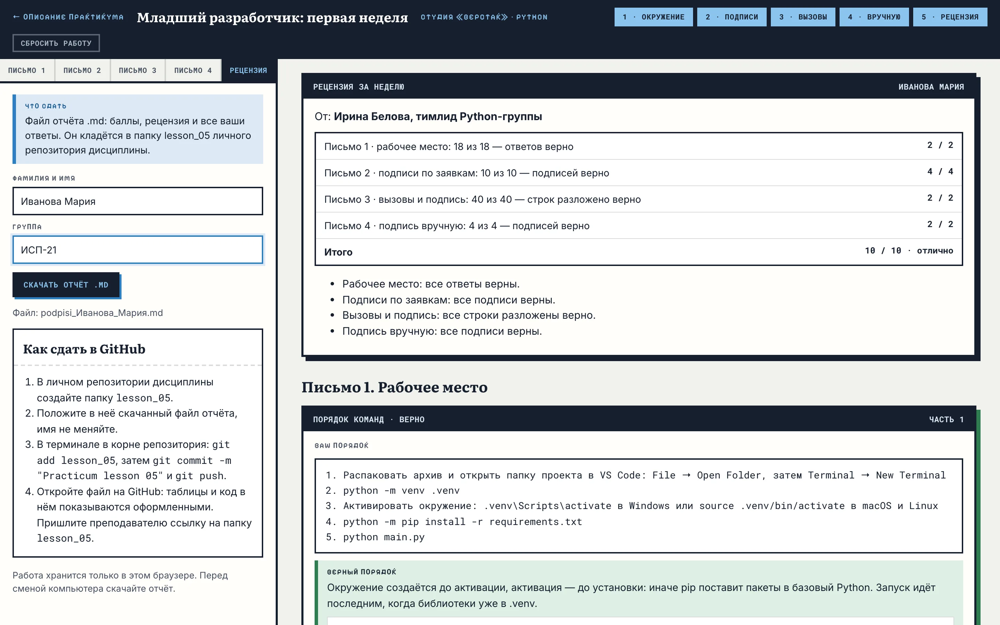

МДК.01.01 · разработка программных модулей · практикум
Практикум
Младший разработчик:
первая неделя
Ролевой практикум по окружению проекта и аннотациям типов. Студент неделю работает стажёром в студии разработки: разворачивает проект, разбирает проблемы с окружением, составляет подписи функций по заявкам заказчиков, сверяет чужие вызовы с подписями и пишет подписи сам. В пятницу тимлид присылает рецензию, по которой собирается отчёт для GitHub.

§1Легенда
Студия «Верстак» пишет модули на Python для небольших компаний. Сейчас у неё пять заказчиков: колледж «Северный» с электронным журналом, кофейня «Зерно» с кассой, фитнес-клуб «Пульс», книжный магазин «Переплёт» и курьерская служба «Квартал».
Новые функции в студии начинают с подписи: какие параметры функция принимает, какого они типа и что возвращает. По подписи одна группа пишет тело функции, а другая — вызовы, и обе работают одновременно. Стажёр в первую неделю получает четыре письма с заданиями от тимлида.
Студия, её сотрудники и заказчики придуманы для практикума.
Первая неделя в студии. Готовит рабочее место, составляет подписи функций по заявкам, проверяет вызовы.
Присылает четыре письма с заданиями и в пятницу — рецензию с баллами.
Пишут в общий чат о проблемах с окружением и присылают вывод терминала.
Описывают будущие функции словами бизнеса: что передаётся, что нужно получить, какие данные к расчёту не относятся.
§2Что отрабатывает каждое письмо
Практикум закрепляет две темы. Письмо 1 — окружение проекта и зависимости из темы 02. Письма 2–4 — запись аннотаций и типы из глав 4.1 и 4.2: простые типы, списки, словари, кортежи, множества, классы date и Path, варианты через |, значения по умолчанию.
Расставить команды от архива до запуска, разложить файлы проекта для первого коммита и найти причину семи проблем из чата: пакет не в том Python, окружение не активно, нет requirements.txt.
Выбрать из заявки данные, которые нужны функции, и подобрать каждому параметру и результату тип из каталога в 24 типа. Два типа в одном месте дают запись через |.
По подписи решить, какие вызовы ей соответствуют: число аргументов, тип каждого аргумента, что можно делать с результатом.
Набрать строку def целиком, без готовых блоков. Под полем показывается, как строка читается, и где в ней ошибка записи.
Во время работы баллы не показываются. Подпись в письмах 2 и 4 переводится на русский язык («grades — список целых чисел»), и по этому переводу студент сам сверяет её с заявкой. Баллы и разбор каждого задания появляются после сдачи, в рецензии.
Так же устроен практикум «Аналитик данных: первая неделя» в справочнике по MongoDB: легенда, письма с заданиями и рецензия в конце.
§3Неделя по письмам
Следующее письмо открывается кнопкой «Дальше» внизу текущего. Переход не зависит от ответов. До сдачи к любому открытому письму можно вернуться и поменять ответ.
Рабочее место
Три части на одной странице.
- порядок команд: пять шагов от архива проекта до запуска, три лишних шага остаются в наборе;
- первый коммит: десять файлов и папок раскладываются по колонкам «В репозиторий» и «Остаётся на компьютере»;
- чат стажёров: семь сообщений с выводом терминала, для каждого выбирается причина из списка девяти вариантов.

Подписи по заявкам
Десять заявок от заказчиков. В каждой описана будущая функция и названы данные, часть которых функции не нужна: имя бариста, номер группы, дата рождения клиента. Имя функции уже дано.
Нужные данные переносятся в подпись, затем каждому параметру и результату подбирается тип из каталога. Блоки переносятся перетаскиванием или нажатиями: тип — потом слот. Стрелка ↑ меняет порядок параметров.

Порядок параметров
Под подписью показана строка, которая получилась, и её перевод на русский язык. Если параметр без значения по умолчанию стоит после параметра со значением, там же появляется сообщение, которое в этом случае выдаёт Python.

Вызовы и подпись
Пять подписей из вторника и к каждой восемь строк кода от фронтенд-группы. Строки раскладываются по колонкам «Подходит к подписи» и «Не подходит».
Проверяется число аргументов, тип каждого аргумента и использование результата: значение str | None нельзя сразу положить в переменную типа str, а результат функции с -> None нельзя сохранять.

Подпись вручную
Четыре заявки, подпись к которым набирается целиком. Имена функции и параметров и их порядок даны в заявке. Под полем сразу видно, как строка читается, а при ошибке записи — место ошибки и что исправить.
Порядок вариантов в | значения не имеет: str | None и None | str засчитываются одинаково. У каждой заявки есть подсказка. В конце письма — кнопка «Сдать работу».

Рецензия за неделю
После сдачи ответы закрываются и открывается рецензия: баллы по каждому письму, итоговая оценка и темы для повторения со ссылками на главы. Ниже — разбор каждого задания: ответ студента, верный ответ и объяснение. Для подписей разбор идёт по параметрам: что нужно, что выбрано.
Слева вводятся фамилия, имя и группа, после этого скачивается отчёт.

§4Рецензия и оценка
Баллы рецензия считает по шкале ниже. В письме 2 заявка засчитывается, когда в подписи стоят все нужные параметры и нет лишних, у каждого параметра и у результата верный тип, а порядок параметров допустим для Python. В письме 4 дополнительно сравниваются порядок параметров и значения по умолчанию.
| Письмо | Что считается | Баллы |
|---|---|---|
| 1 · рабочее место | Верные ответы: порядок команд (1), файлы (10), причины из чата (7). 16–18 — 2 балла, 11–15 — 1 | 2 |
| 2 · подписи по заявкам | Верные подписи: 9–10 — 4 балла, 7–8 — 3, 5–6 — 2, 3–4 — 1 | 4 |
| 3 · вызовы и подпись | Верно разложенные строки: 36–40 — 2 балла, 28–35 — 1 | 2 |
| 4 · подпись вручную | Верные подписи: 4 — 2 балла, 2–3 — 1 | 2 |
| Итого | 10 | |
Перевод в оценку: 9–10 баллов — «отлично», 7–8 — «хорошо», 5–6 — «удовлетворительно».
§5Как сдать отчёт в GitHub
Отчёт — файл Markdown с именем podpisi_Фамилия_Имя.md. В нём фамилия, имя, группа и время сдачи, таблица баллов, темы для повторения и все ответы: порядок команд, раскладка файлов, причины из чата, собранные и написанные подписи. GitHub показывает такой файл с оформленными таблицами и кодом.
- На вкладке «Рецензия» введите фамилию, имя и группу и нажмите «Скачать отчёт .md».
- В личном репозитории дисциплины создайте папку
lesson_05и положите в неё файл. Имя файла не меняйте. Папки прошлых занятий не трогайте. - В терминале в корне репозитория выполните
git add lesson_05, затемgit commit -m "Practicum lesson 05"иgit push. - Откройте репозиторий на GitHub, перейдите в папку
lesson_05и откройте файл. Пришлите преподавателю ссылку на папку, напримерhttps://github.com/ВАШ-ЛОГИН/ВАШ-РЕПОЗИТОРИЙ/tree/main/lesson_05.
§6Вопросы
Можно ли пройти практикум дома?
Да. Рабочий стол открывается в любом браузере, Python для него не нужен. Работа хранится в том браузере, где её начали: на другом компьютере она не появится. Перед сменой компьютера сдайте работу и скачайте отчёт.
Что будет, если закрыть вкладку?
Ответы сохраняются при каждом изменении и появляются снова при следующем открытии рабочего стола в том же браузере.
Можно ли переделать работу после сдачи?
Нет, после сдачи ответы закрыты. Сбросить работу может только преподаватель — кнопкой «Сбросить работу» с паролем.
Почему по ходу работы не видно, верно ли решено?
Сверка подписи с заявкой входит в задание. Перевод подписи на русский язык показывает, что записано; совпадает ли это с заявкой, решает студент. Баллы появляются в рецензии после сдачи.